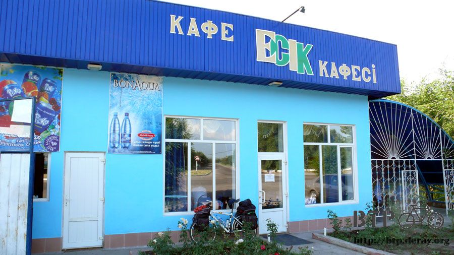

招牌中的棲身之所
清晨還不到五點，就從裡面跟外面都一樣冷的帳篷裡爬出來，蓬頭垢面的先洗把臉，託那些夜貓子司機的福，整個晚上沒睡好，眼睛腫得像胡桃一樣。
進去餐廳裡面，也是整個晚上沒睡覺的女侍者親切的送來一壺熱奶茶，喝著溫熱又香濃的奶茶，整個人從內心深處溫暖到四肢末端。
拿著一把硬幣準備要付錢的時候，被女侍者揮揮手說不用付，同樣是整晚沒睡的可憐人，她請客。
出發前把三個水壺都裝滿水，在能夠生飲水的國家旅行真是很方便的事情，感覺上要補充飲水會方便很多。
之前在法國騎單車的時候，眼睛對於四周的景色都可以視若無睹，但是對於尋找水龍頭則變的超級靈敏。

早上六點半趁著天氣還算涼快，早一點出發趕路，終於又將行程調整為早起早出發的模式，好好保持下去。
從科別克一轉出去就是下坡路，一直往下滑個不停，把昨天爬坡的鬱悶一掃而空。
其實若單純只是爬坡到也沒那麼累，但是哈薩克的路況不是很好，坑坑洞洞凹凹凸凸的路面，光是平路騎起來就很累人，更何況是上坡。
下坡這一段路很平順的前進著，呼吸著一大早的新鮮空氣，頭上的鳥兒整群的繞圈子飛行，好像在練習什麼一樣。

講到鳥就不得不提到哈薩克的路，雖然才進入哈薩克短短三天，但是對路的印象已經非常深刻。
路不好騎是其中之一，其中之二就是路上的屍體很多，像是刺蝟、貓、狗這些都有，但最多的還是鳥。
各式各樣的鳥類死在路上，有的還算完好，有的已經被壓的剩下羽毛黏在地上。
在中國的時候，每天都會看到修路或是維護路面的工人，但是在哈薩克完全看不到。
現在騎的這一條還算是主要道路，但是路況跟中國的縣道小徑只能說是相同等級，也沒有任何修補路面的人員處理。
好像一條路鋪好了，要是之後爛掉的話是別人家的事情，養護不關他們的事一樣。

下坡滑完之後就是一小段上坡，然後開心的時光宣告結束，繼續騎爛爛的平路吧。
因為距離阿拉木圖還有一百六十公里，不勉強著要一天就騎到，能騎多少算多少，要是能找到舒服的過夜處就不用考慮先住下再說。
等騎到大城市之後，已經不太想買哈薩克的地圖了，就算買了意義也不大，道路又沒有名字，地圖只標示會經過了城鎮有哪些，
和行走的方向是哪邊，這些都可以靠那一張十元的哈薩克全國地圖和Google Earth就取代掉。
除非接下來的路會比較有系統一點，不然買紙本地圖的錢就可以省起來了。

公車等候站裡排了三隻在等車的驢子呀～！剛看到的時候笑到要從車上掉下來>"<
早上九點忍不住嘴饞買了100元的杏子，因為怕買太多吃不完，所以只拿出一個百元的硬幣。
硬幣最大面額似乎就是一百元，而紙鈔的最小面額則是兩百。
賣杏子的婆婆好像是在跟我說，這些杏子都是整桶整桶賣的，我只給一百元，她不知道要怎麼賣給我？
沒關係，從包包裡面拿出一個塑膠袋，請你裝在袋子裡面給我吧，然後就是一把又一把的裝進來，只想買一點點，又變成買了一大堆。
這邊的杏子吃起來不怎麼甜也不怎麼酸，婆婆還示範說吃完之後的籽不要吐掉，用石頭敲破之後裡面的果仁也是可以吃的。

除了沿路上都是賣杏子的之外，也有賣飲料的，但這個應該是給汽車喝的飲料。
偶爾會有小鬼追著我騎車，哈薩克的自行車在輪胎部分都會裝飾很多彩色的塑膠片，這一台算是比較平淡的。
邊騎邊吃杏子，看到老朋友的時候照慣例的可以好好休息一下了。

因為不想再喝汽水，所以買了一公升的柳丁汁，補充一下維他命C。
另外也買了一根巧克力和一包餅乾，找錢給我的時候什麼樣的幣值都有，可以好好了解一下哈薩克的金錢文化。
光是乘涼休息是沒有用的，現在我需要的是睡覺，昨天睡得實在太差，今天精神很萎靡不振。
可是難得調整成一大早出發的模式，就這麼把早上的時間花在睡覺未免太可惜，打算繼續撐到中午再找地方睡覺順便躲太陽。
每天都學幾個新的哈薩克語字彙，今天學到單位值『一』和『自行車』的念法，之前學的那幾句簡單的，也慢慢的修正發音，
至少要講出來讓人可以聽得懂才有用處，等講習慣之後就會脫口而出，不需要再思考發音該怎麼念了。
哈薩克的狗狗真是不少，今天一共被四隻狗追著跑，還好不是太大隻的惡犬，而是一般大小的狗狗。
對著追過來的狗狗大叫幾聲『汪！』，就能讓牠知難而退。
真懷念在中國騎車不會被狗追的日子，現在一聽到有什麼風吹草動都會緊張的回頭看，騎起車來比較心神不寧。
中午的時候在廢棄加油站的庇護之下好好的睡了一個小時的午覺，地上一粒粒的都是羊的大便，還好不會臭，而且沒有引來蒼蠅。
睡的非常的舒適祥和，就算要長住在這個加油站也沒有問題，只要能讓我睡得飽就行了。

下午一點在雜貨店進行採買，因為找不到餐廳，所以午餐就順便在這裡吃點東西就好。
看到一個裝著牛奶的紙盒放在冰箱，這個應該是牛奶沒錯吧？開瓶一喝是酸酸的、濃濃的，並不是牛奶，而是優酪乳。
還好我沒有很篤定的認定它是牛奶，不然喝下第一口的瞬間應該會想吐的叫救命吧。
順便買了一支冰棒、繞行著商品區找著有什麼可以食物可以填飽肚子，魚肉罐頭沒興趣，接著買了一碗泡麵和一包餅乾。
泡麵的味道全世界都差不多，就是那個樣子，午餐就這麼解決掉了。
沿路上經過了五、六個或是更多的城鎮，有些有看到城鎮的牌子，但是沒看到城鎮的影子，因為哈薩克的村莊大多不建在馬路旁。
都是要拐彎進去小路裡面，或是蓋在樹木繁盛的地方，不仔細看很容易就錯失掉了。
雖然經過了這麼多城鎮，可是招牌只有商店、咖啡店這些，路上的攤販也都是雜貨店或是蔬果攤，每到一個地方就問路人這邊有旅館嗎？
一個人跟我說沒有我還不相信，一定要連問三個人都說這個地方沒旅館，我才會死心的離開。

小心注意橫衝直撞過馬路的人～這我到是沒看到，但是哈薩克人開車很猛，一台比一台還快，卡車很少，骨董小轎車超級多。
除了路況不怎麼樣的路之外，也有給自行車走的專用道，當然路況就更不好騎。
可是騎在裡面都是樹蔭，涼快很多，但路面實在太差，震的小多整台都要解體似的，騎一小段之後還是乖乖回馬路上待著就好。

自產自銷的農產品，以為哈薩克人不喜歡種田，所以才會這麼多荒涼的土地沒有被開發，但基本上能種得出來的這邊也是都有。

簡直像是雜貨店總匯一樣的露天商店，看了啥都想買，但是啥都沒買，居然連充氣的戲水玩具都有在賣，這邊是哪裡可以戲水？
其實住不住旅館我不是那麼在意，我比較在意身上穿的衣服已經髒得有點噁心，每天都是汗流浹背的騎車，上衣全是濕的，褲子也汗濕半條。
這樣的衣服當然很想洗乾淨呀，但是沒辦法洗衣服，雖然睡前至少都會擦過澡，可是隔天一早又要繼續穿髒兮兮的衣服騎車。
風吹過自己，鼻子都會聞到那股酸臭的汗味。
我需要旅館能提供我洗衣服和曬衣服的環境，若是能讓我沖個澡好好睡上一覺那也不錯。
如果有無限量的乾淨衣服供應的話，就算天天都露營我也OK。
住得很隱蔽的人就像這樣，門牌號碼釘在樹幹上，小門用樹木當成柱子，樹木中間就是小徑，房子在樹林深處。
像這樣的房子多得很，好像在玩捉迷藏一樣，看誰的房子藏得好。

口渴的時候又跑去商店買飲料喝，果汁喝的有點膩，想換點別的口味，這也是中午會買牛奶的原因。
發現一大瓶白色外觀的寶特瓶飲料，是不透明的包裝，搞不清楚是什麼，可是路上有看到小朋友在喝這個，問一下老闆說這個好喝嗎？
當然他一定會說好喝，有問跟沒問一樣，付過錢轉開瓶蓋就聽到開汽水時那種氣噴出來的聲音，難到這個是汽水嗎？
小心翼翼的喝一小口，真得差點連五臟六腑都吐出來，又酸又嗆的味道，這個東西老闆居然跟我說好喝。

他看我一臉痛苦想吐又吐不出來的表情，還跟我說要搖一搖之後再喝味道會比較好。
這個就是牛奶發酵變成酸奶之後，再經過不知道什麼的奇怪步驟，製作成酸奶汽水，真是超級世界難喝的。
整瓶原裝都不要經過調味，就可以拿去當成整人節目的處罰飲料。
這麼大一瓶才喝一小口而已就不知道該怎麼處置，走出門口剛好發現一個穿的破爛的乞丐，整瓶送給他，幸好他肯收，不然我就頭大了。

下午快六點的時候，看到一個招牌有點眼熟，停下車來翻出筆記本，一個字母一個字母的對照的自己寫的單字，果然是尋找已久的旅館。
真是好加在進入哈薩克之前有在留言版問一些哈薩克的相關常識，不然這個招牌不論從哪個角度看，我都看不出來裡面有『旅館』這個字。

進去問旅館的價錢，拿了一張價目表給我看，只看得懂阿拉伯數字和左邊標示的房間號碼，但是上面的欄位是什麼意思。
一個人、兩個人、三個人、很多人、全家人的意思嗎？
習慣性的就比著最便宜的700元那個欄位，然後伸出一根手指頭說只有我自己一個人要住，結果真的就只收了我700元的住宿費用。
心裡才想說原來哈薩克的住宿不貴嘛～
後來老闆娘才發現是誤會，她以為我比一根手指頭是要休息一個小時，而不是我想表達的一個晚上。
表格上面那個欄位前面寫的是休息一個小時、兩個小時、三個小時、一晚上、兩晚上，跟住宿的人數沒有關係。
過沒多久就來跟我解釋，然後再將差額給補齊，一個晚上兩千五百堅戈，換成中國的住宿水準已經是超貴的，但是換成台灣的水準則還算便宜。
第一要務先好好的沖個澡，房間沒有廁所可是有沖澡的地方，終於能洗個像樣的澡了。

洗完澡之後用滾燙的熱水和著洗衣粉將髒兮兮的衣服全部泡在裡面洗乾淨，拿到後院去晾曬。
這個兩千五百元一定要花的有價值，在哈薩克的這段期間要跟Fleck跟Jacquin這對法國夫婦看齊，基本上天天都露營，
髒得受不了的時候就去舒服的旅館好好的洗個澡，恢復元氣。
這樣雖然住宿費不便宜，但幾天平均算起來的話還算過得去。

落腳的地方距離阿拉木圖只剩短短的三十公里，已經不想再往前騎了，反正進到阿拉木圖也是更貴的物價而已，能夠在邊緣的地方便宜住宿要好好把握。
剩下不遠的路明天在騎進市區，若是能找到人接濟就在市區住一晚上，不然就往西邊的郊區走。
一路上都沒看到有警車或是警察的影子，雖然沒有需要他們幫忙，但是在中國三不五時就會看到。
這樣萬一發生什麼事情，只要耐心等一下就會有警車巡邏經過，可是哈薩克都看不到，等找到今天要住的旅館之後才看到警察都在這邊聊天。

警車不怎麼樣，破破的，很像卡通裡面那種玩具車。
盥洗完畢之後去餐廳吃飯，送上菜單來翻開第一頁，笑笑的說一個字也看不懂，請隨便煮點好吃的送上桌，什麼都行。
結果晚餐吃的是奶茶配麵包。
這個跟在阿展瑪他們家吃的東西差不多，但是用漂亮的餐具裝起來就比較有質感。
很多牛肉片的麵，還特地拿了一雙筷子給我，哈薩克的餐具基本上是湯匙跟叉子。
還沒進入哈薩克之前，在國境小鎮休息，當地人就跟我說哈薩克的肉很便宜、菜很貴，叫我到時候多吃一點肉。
當時聽到我還半信半疑，但是吃完這盤麵我想肉很便宜這個應該是可以肯定的了。

吃完這些還沒吃飽，看到大家圍著桌子在包小顆的水餃，就點了一碗接著吃。

這個餃子只有正常餃子的三分之一大小，吃起來比較像是火鍋料，但味道還不錯。
這種小水餃在哈薩克很常看到，今天去的雜貨店冷凍庫裡面都有在賣。
這樣的晚餐吃下來，加上10%服務費之後一共是690元，折合台幣也將近兩百元了，真懷念中國便宜的物價，把我傳送回去吧>"<
繼續閱讀：6.28 汽車都市、都是汽車
哈薩克-堅戈－ 1：0.26 台幣
6.27 |
總計：4185元 |
杏子100元、柳丁汁180元、巧克力120元、餅乾110元、午餐優酪乳、冰淇淋、泡麵、餅乾305元、白色不明飲料180元、晚餐奶茶、麵包、牛肉麵、湯餃690元、住旅館2500元 |
|